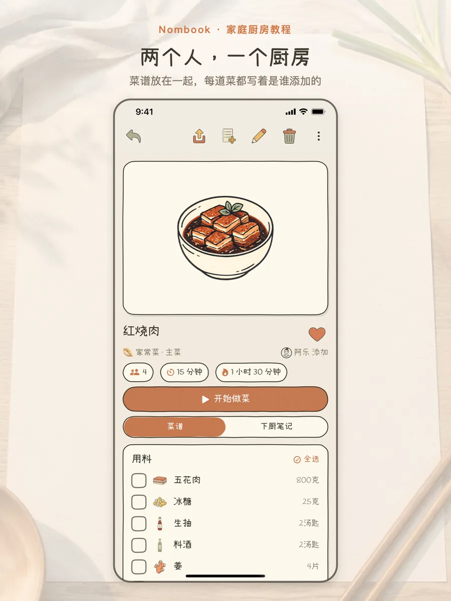
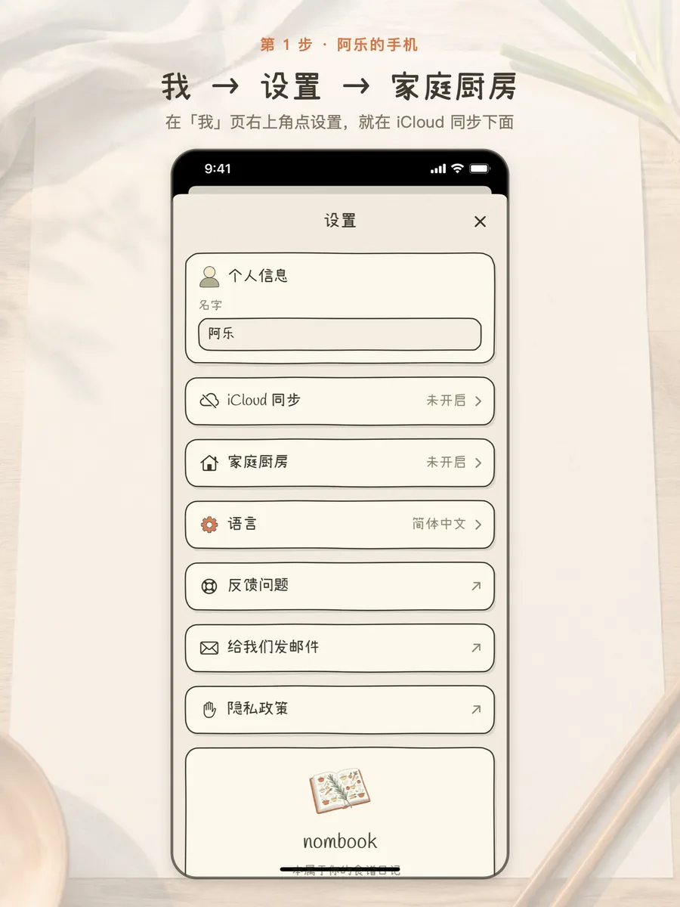
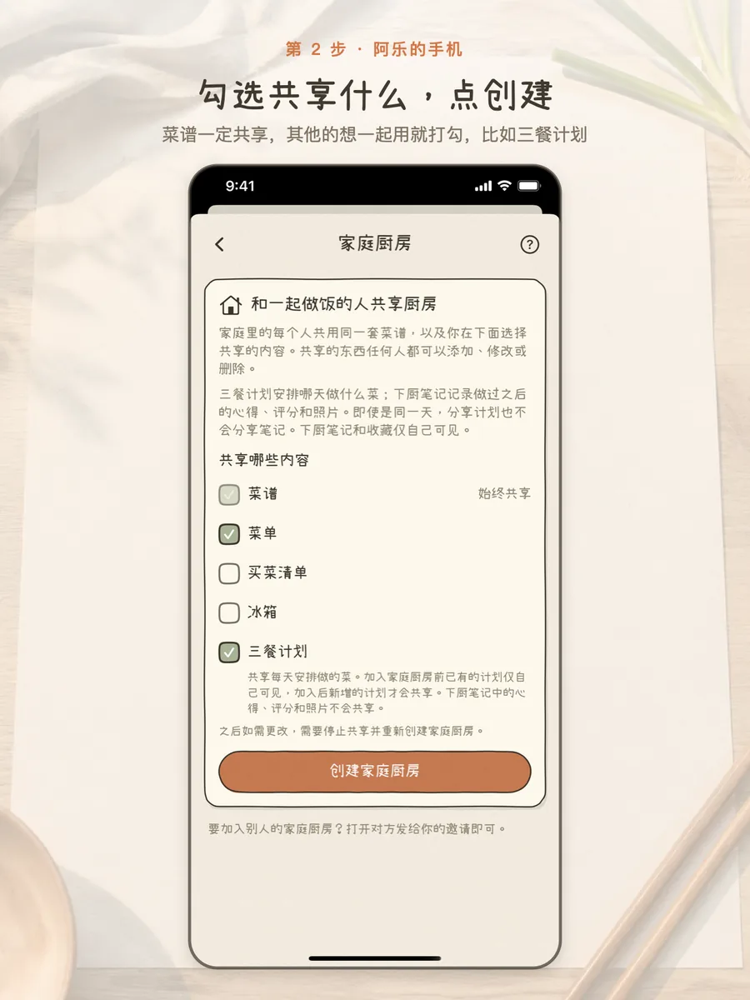
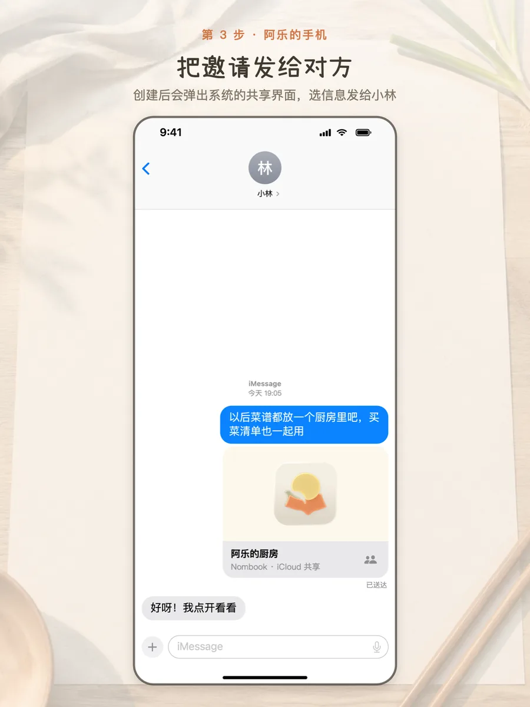
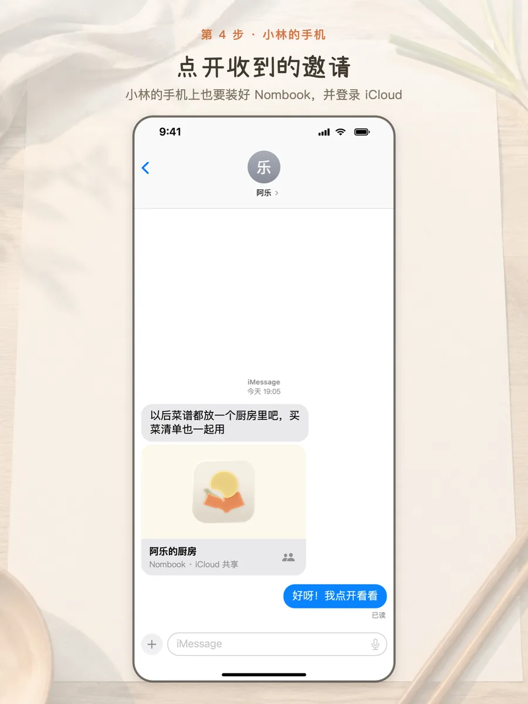
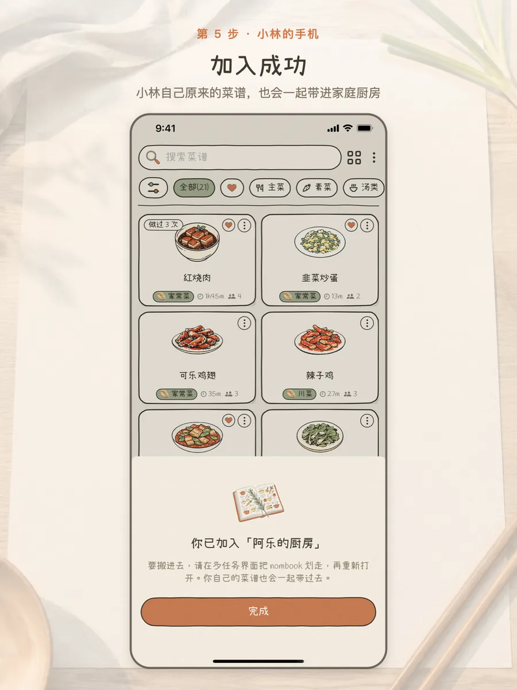
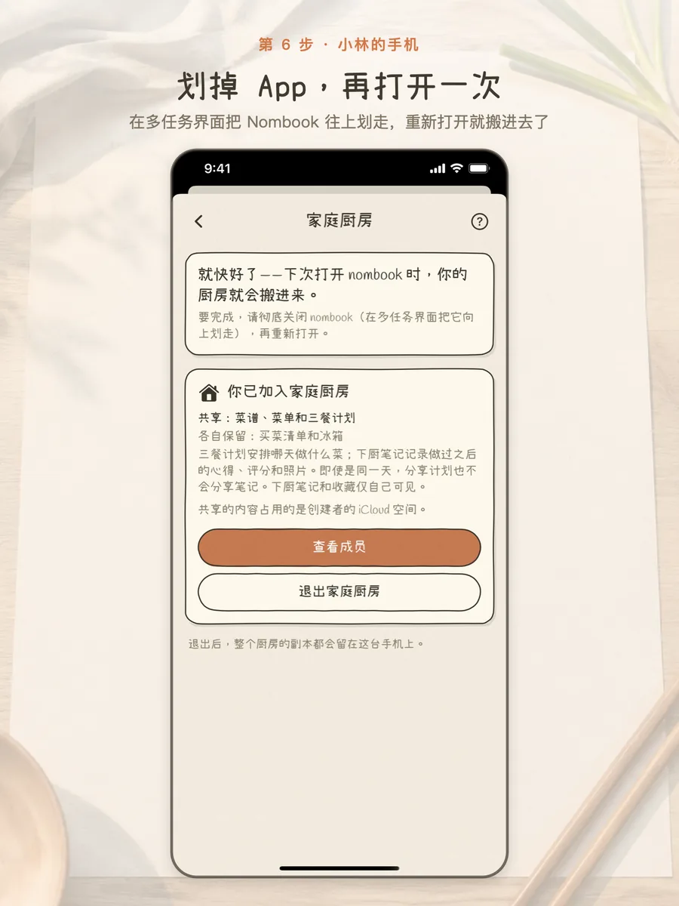
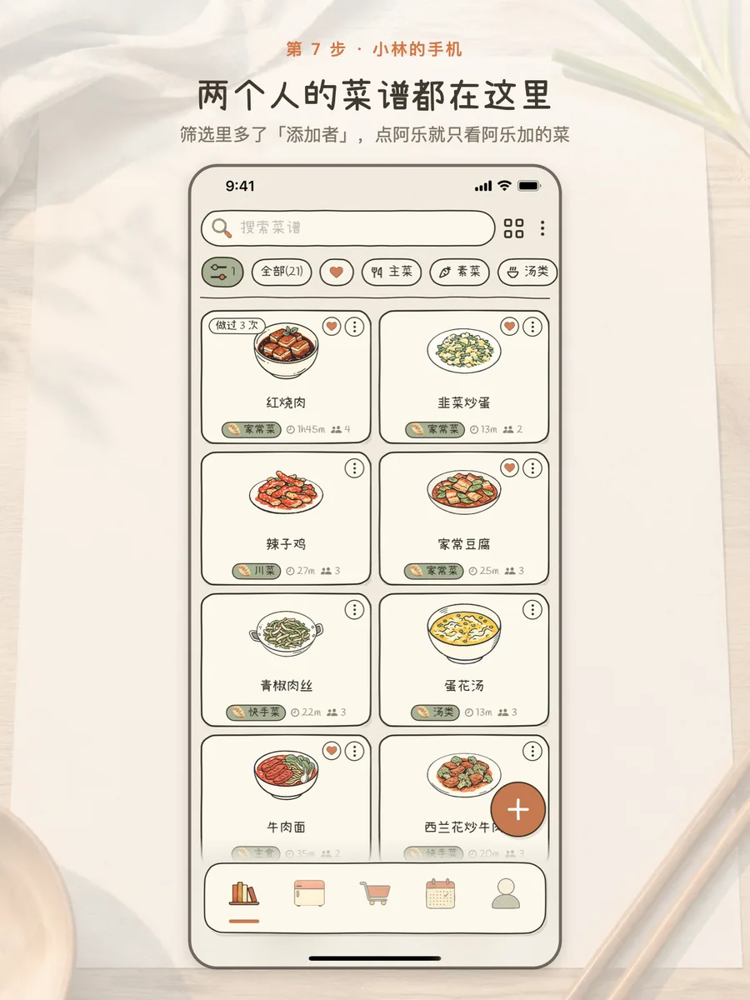
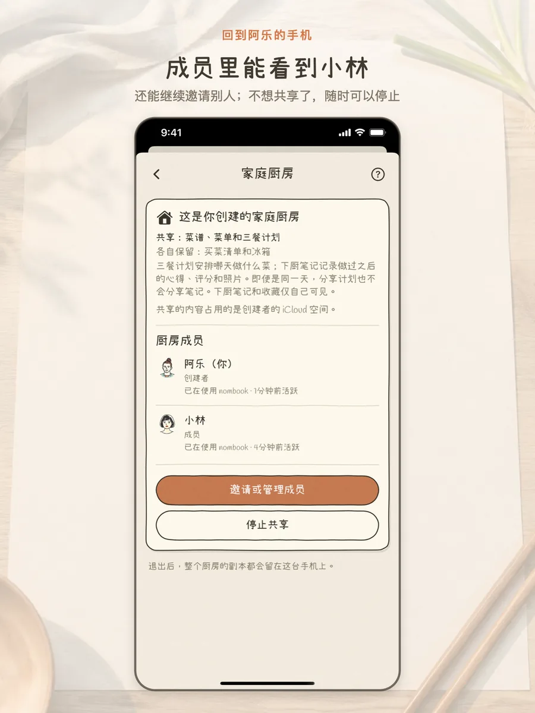

家庭厨房怎么用
一个人创建家庭厨房、发邀请，另一个人点开加入。之后两个人共用一套菜谱， 每道菜都写着是谁添加的。下面用阿乐和小林两个人演示一遍。
- 两个人的手机上都装好 Nombook，并且都登录了 iCloud。
- 创建的人需要先在设置里打开「iCloud 同步」。

两个人，一个厨房 · 每道菜都写着是谁添加的 
第 1 步 · 阿乐：我 → 设置 → 家庭厨房 
第 2 步 · 阿乐：勾选要共享的内容，点「创建家庭厨房」 
第 3 步 · 阿乐：在弹出的共享界面里选「信息」，发给小林 
第 4 步 · 小林：点开收到的邀请 
第 5 步 · 小林：加入成功，自己原来的菜谱也会一起带过去 
第 6 步 · 小林：在多任务界面把 Nombook 划走，再重新打开 
第 7 步 · 两个人的菜谱都在了，筛选里还能按「添加者」看 
完成 · 阿乐的成员列表里能看到小林
常见问题
共享之后，谁都能改菜谱吗？
可以。家庭厨房里共享的东西，每个人都可以添加、修改或删除。
下厨笔记和收藏会被看到吗？
不会。下厨笔记里的心得、评分、照片，还有收藏，都只有自己能看到。
加入之前我计划好的三餐会共享吗？
不会。加入前已有的三餐计划只有自己可见，加入之后新增的才会共享（前提是勾选了三餐计划）。
共享的内容存在哪里？
存在创建者的 iCloud 里，占用的是创建者的 iCloud 空间。Nombook 没有自己的服务器。
想改共享哪些内容怎么办？
共享内容在创建时就定好了。要改的话，先停止共享，再重新创建一个家庭厨房。
退出或者停止共享以后，菜谱还在吗？
在。每个人的手机上都会保留一份当前厨房的副本。